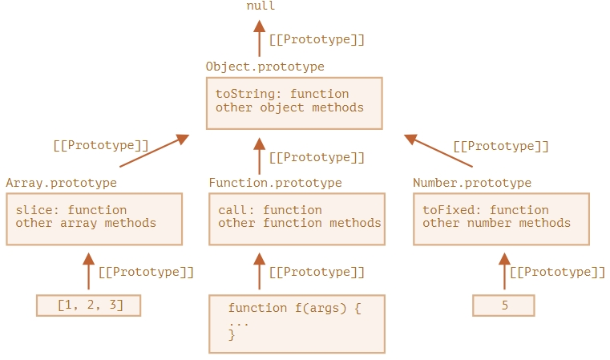

Свойство "prototype" широко используется внутри самого языка JavaScript. Все встроенные функции-конструкторы используют его. Сначала мы рассмотрим детали, а затем используем "prototype" для добавления встроенным объектам новой функциональности.
Все функции типа toString() храняться в Object.prototype:
let obj = {};
alert(obj.__proto__ === Object.prototype); // true
// obj.toString === obj.__proto__.toString === Object.prototype.toString
alert(Object.prototype.__proto__); // null
Иерархия наследования выглядит так:

Как мы помним, они не объекты. Но если мы попытаемся получить доступ к их свойствам, то тогда будет создан
временный объект-обёртка с использованием встроенных конструкторов String, Number и Boolean, который
предоставит методы и после этого исчезнет.
Эти объекты создаются невидимо для нас, и большая часть движков оптимизирует этот процесс, но
спецификация
описывает это именно таким образом. Методы этих объектов также находятся в прототипах, доступных как
String.prototype, Number.prototype и Boolean.prototype.
У null и undefined нет обёрток.
Встроенные прототипы можно изменять:
String.prototype.show = function() {
alert(this);
};
"BOOM!".show(); // BOOM!
Но это плохая идея, поскольку могут возникать конфликты. Изменение допускается в одном случае, создание
полифилов (то что есть в спецификации языка но не добавлено в конкретную реализацию), например:
if (!String.prototype.repeat) { // Если такого метода нет
// добавляем его в прототип
String.prototype.repeat = function(n) {
// повторить строку n раз
// на самом деле код должен быть немного более сложным
// (полный алгоритм можно найти в спецификации)
// но даже неполный полифил зачастую достаточно хорош для использования
return new Array(n + 1).join(this);
};
}
alert( "La".repeat(3) ); // LaLaLa
Пример:
let obj = {
0: "Hello",
1: "world!",
length: 2,
};
obj.join = Array.prototype.join;
alert( obj.join(',') ); // Hello,world!
Поскольку множественное наследование под запретом, этот метод позволяет тонко настраивать объект.
Задача решена, решение предложено как у автора.
function f() {
alert("Hello!");
}
Object.prototype.defer = function(time){
setTimeout(this, time)
}
f.defer(1000); // выведет "Hello!" через 1 секунду
Моё решение:
function task2(params) {
function f(a, b) {
alert(a + b);
}
Object.prototype.defer = function (time) {
const fn = this;
return function(a, b){
setTimeout(()=>fn(a,b), time)
}
}
f.defer(1000)(1, 2); // выведет 3 через 1 секунду.
тесты проходит, но сделано на 2 аргумента и я хз передаёт ли this.
Решение автора:
Function.prototype.defer = function(ms) {
let f = this;
return function(...args) {
setTimeout(() => f.apply(this, args), ms);
}
};
// check it
function f(a, b) {
alert( a + b );
}
f.defer(1000)(1, 2); // выведет 3 через 1 секунду.